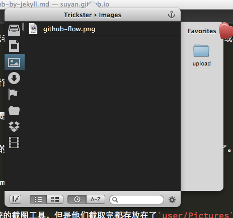

在Github上搭建Jekyll博客和创建主题
之前本来想展开写的，后来发现Jekyll官网的教程已经非常完善了就没有多写，所以只有这篇。 但是过了这么久，发现很多人还是不清楚怎么搭建，所以这里打算详细写一下，并且把自己对图片的解决方案以及主题的创建步骤也一并写下。
本篇主要谈如何搭建，不再讲为什么用它们。
说明：本篇用到的代码中，为了防止解析冲突，一律多了\这个来防止被误解析
创建一个库
在Github上新开一个库，名字叫做username.github.io，然后当别人在地址栏输入相应url的时候就可以访问进来了。
在这个库中完全可以只上传一个index.html，来讲自己要写的东西写进去，但是这样会丧失很多灵活性，所以需要Jekyll的帮助来创建自己的博客。
设定目录结构
把自己的库clone到本地来，建立如下目录结构：
├── CNAME
├── README.md
├── _config.yml
├── _includes
│ ├── disqus.html
│ ├── footer.html
│ ├── googleanalytics.html
│ ├── header.html
│ └── navside.html
├── _layouts
│ ├── base.html
│ ├── book.html
│ ├── page.html
│ └── post.html
├── _posts
│ ├── Book
│ ├── Life
│ ├── Resource
│ ├── Technology
│ └── Tool
├── index.html
├── pages
│ ├── about.html
│ ├── archive.html
│ └── atom.xml
├── public
│ ├── css
│ ├── fonts
│ ├── img
│ ├── js
│ └── upload
└── sitemap.txt
这个目录结构是我自己设定的，也可以有不同的目录结构，看官网。
接下来我主要解释这里面每一个目录的功能。
配置文件
_config.yml里写有整个站点的主要配置项，我的如下：
permalink: /:year/:month/:day/:title.html #博文的固定链接
paginate: 10 #分页时每页博文数量
author: #自定义常亮
name: 闫肃
email: yansu0711@gmail.com
link: http://yansu.org
title: 闫肃的博客 #自定义常量
locals: #自定义常量
tags: 标签
about: 关于
active: 技术 #自定义常量
subscribe_rss: /pages/atom.xml #订阅地址
markdown: redcarpet #markdown解释器
这里的自定义常量可以在模板中使用，以后有修改的时候就不需要跑去改代码了。尤其是对一些私人的选项，可以在这里定义。现在我的博客中出了disqus和googleanalytics外都直接在这里设定就好了。
域名配置
CNAME这个文件写明了这个站点的域名，如果不喜欢username.github.io的话，可以像我一样改掉
yansu.org
改法只要在这个文件中写入域名就可以了。不过你需要去域名服务商那里设定域名解析规则。
只要把主机记录为@,www的记录值写成username.github.io就好了。
博客存放
_posts下的所有目录中的所有博客，都会被Jekyll处理成为静态的html文件，然后放在_site下。我这里没有_site目录，是因为我在.gitignore文件中把这个目录屏蔽掉了，它不会上传到Github上。
_site/
_drafts/
.DS_Store
以上是我的.gitignore文件内容。
在_posts下的符合YYYY-MM-DD-xxxxxx.md的文件，都会被Jekyll认定为博客内容。我在_posts下又新建了一些文件夹，主要是方便自己本地管理博客。
在上述这些文件中，必须先定义一些配置项，例如这篇博客的md文件中，开头是这样的：
layout: post #这个博客的布局文件
title: 在Github上搭建自己的Jekyll博客 #博客标题
category: 工具 #博客分类
tags: Jekyll #博客标签
keywords: Jekyll,Github #自定义常量
description: #自定义常量
除了自定义常量外的必须包含进去，自定义变量在这个布局中可以访问。
模版文件
剩余的目录，基本都属于模板文件了，我解释一下各自的作用：
_includes可以在模板中随时包含的文件_layouts布局文件，在博客头配置中可以选择pages站内固定的页面public公共资源，包括js,css,img等，还有我博客中调用的图片，我都放这里index.html站点的首页，整个站的入口文件sitemap.txt给搜索引擎看的，如何爬取这个站
创建自己的主题
上面讲了如何布局好站内文件结构，接下来主要就是如何创建一个自己的主题了。
布局文件是整个主题最重要的文件，这些文件告诉Jekyll如何去形成一个html页面。
首先我说一下我最基础的page.html文件，因为它决定了入口文件index.html的布局。
layout: base
<div class="row">
<div class="col-md-12 aside3-title">
<br>
<h2 id="#identifier">{\{ page.title }}</h2>
</div>
<div class="col-md-12 aside3-content">
<div id="page-content">
{\{ content }}
</div>
<hr>
{\% include disqus.html %}
</div>
</div>
从这里可以看到这个文件写起来一点都不复杂，但是为什么开头还有个layout呢？因为它也不是最基本的布局文件，最基本的是base.html，我们看一下它的内容。
<!doctype html>
<html>
<head>
{\% include header.html %}
</head>
<body>
<div class="container">
<div class="row">
{\% include navside.html %}
<div class="col-md-8 col-lg-8 col-sm-12 col-xs-12 aside3">
<div id="container">
<div id="pjax">
{\{ content }}
</div>
</div>
</div>
</div>
</div>
{\% include footer.html %}
{\% include googleanalytics.html %}
</body>
</html>
这个文件就更像一个HTML文件了，用PHP或者Python写过web应用的人看到{\% %}这样的标签应该不陌生，这不就是模板标签嘛。其实Jekyll也是借用了一下模板系统的，官网说明在这里，看到开头第一句讲的它用了Liquid了吧。如果Jekyll的文档不能满足你的话，可以去Liquid那里查查。
我解释一下base.html中几个标签的功能。
{\% include header.html %}从_includes中把header.html包含进来放在这里{\% include navside.html %}同上{\{ content }}这句的作用是将继承这个Layout的文件中的代码，放在这里
所以再看page.html文件就很容易了，它就是把配置项下面的内容，填补到base.html中的{\{ content }}处形成了一个文件。那么page.html中的{\{ content }}做什么用呢？因为别人也可以以page.html来作为自己的布局文件。
入口文件index.html就是这么干的：
layout: page
title: 首页
...
这里看到选择了page作为布局文件，那么title干嘛用的呢？其实它是在被包含的header.html中被用到了。来看看header.html怎么写的：
<meta charset="utf-8">
<title>{\{ page.title }} | {\{ site.title }}</title>
<meta name="author" content="">
{\% if page.keywords %}
<meta name="keywords" content="Jekyll,Github">
{\% endif %}
{\% if page.description %}
<meta name="description " content="">
{\% endif %}
...
这里又使用了一些新标签——{\{ }\}，这个标签就是用来书写变量的，通过在配置处配置变量，或者使用系统的自定义变量，可以轻松改变页面内的一些元素或者内容。
系统变量查询可以去这里
其实整个主题书写就是这么简单，如果有不清楚的可以再看看官网的文档。动一动手就非常明白了。
插入图片
很多人感觉用Jekyll最不方便的就是插入图片了，其实我也是这么觉得的。所以只能自己去想些办法。
图片统一存放
图片我都放在了/public/upload下，所以我在插入图片的时候只要用就可以了。
方便的图片导入
导入图片的方式是我将upload文件夹做了个软连接，放到mac的dock上就行了，有图片要用的时候直接往里面一拖。
方便的截图
很多时候图片都是现截取的，比如用QQ的截图工具，或者系统的截图工具，但是他们截取完都存放在了user/Pictures里面，来回移动太累了。我这里介绍一个Mac下的一个工具——Trickster，看图

这个工具可以看到刚刚修改过的图片，而且还有一个收藏的文件夹，我每次截取完图以后，从左边往右边一拖，然后在markdown中就可以继续书写了。一点都不耗时。
本地预览及提交
本地预览自己的修改很容易，只要进入username.github.io目录，执行
jekyll serve
然后访问http://localhost:4000就OK了，安装Jekyll的方式自行谷歌吧…
自己预览过没有问题以后，就提交到服务端吧，Git三步走
git add xxx
git commit -m "xxx"
git push
其他
我觉得自己的这个主题设定的算是比较好修改和移植的了，如果大家有什么问题，可以尽管问。
另外一些特别的功能，比如三栏、评论、谷歌分析，这些都不难，相信你稍微打开Github读一下这个主题的代码就很快明白了。
代码地址戳这里